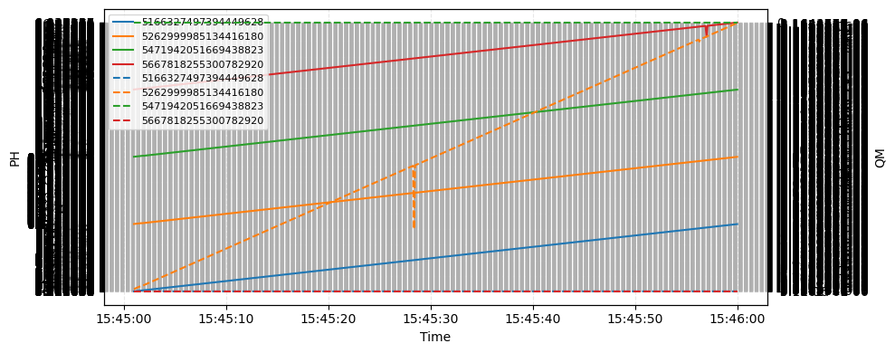

Tutorial 71: Time Curves
This example demonstrates how to …
SIR 3S Installation
[1]:
SIR3S_SIRGRAF_DIR = r"C:\3S\SIR 3S\SirGraf-90-15-00-19_Quebec"
Imports
[2]:
from sir3stoolkit.core import wrapper
[3]:
from sir3stoolkit.mantle import mantle
The wrapper package has to be initialized with reference to a SIR 3S (SirGraf) installation.
[4]:
wrapper.Initialize_Toolkit(SIR3S_SIRGRAF_DIR)
Additional imports
[5]:
import os
…
Initialization
[6]:
s3s = mantle.Mantle_SIR3S_Model()
Initialization complete
Open Model
[7]:
dbFilePath=r"C:\Users\aUsername\3S\PT3S\PT3S\Examples\Example2.db3"
[8]:
s3s.OpenModel(dbName=dbFilePath,
providerType=s3s.ProviderTypes.SQLite,
Mid="M-1-0-1",
saveCurrentlyOpenModel=False,
namedInstance="",
userID="",
password="")
Model is open for further operation
Edit
[9]:
node_tks = ["5471942051669438823", "5166327497394449628", "5667818255300782920", "5262999985134416180"]
[10]:
df_pipes_results = s3s.generate_element_results_dataframe(element_type=s3s.ObjectTypes.Node
,tks=node_tks
,properties=["QM", "PH"]
,timestamps=None # all available simulation timestamps will be used
)
[2025-11-21 15:11:52,562] INFO in sir3stoolkit.mantle.dataframes: [results] Generating results dataframe for element type: ObjectTypes.Node
[2025-11-21 15:11:52,562] INFO in sir3stoolkit.mantle.dataframes: [Resolving Timestamps] No timestamps were given. Checking available simulation timestamps (SIR3S_Model.GetTimeStamps()).
[2025-11-21 15:11:52,621] INFO in sir3stoolkit.mantle.dataframes: [Resolving Timestamps] 601 simulation timestamp(s) are available.
[2025-11-21 15:11:52,693] INFO in sir3stoolkit.mantle.dataframes: [Resolving Timestamps] 601 valid timestamp(s) will be used.
[2025-11-21 15:11:52,697] INFO in sir3stoolkit.mantle.dataframes: [Resolving tks] Retrieved 635 element(s) of element type ObjectTypes.Node.
[2025-11-21 15:11:52,698] INFO in sir3stoolkit.mantle.dataframes: [Resolving tks] 4 tks remain after filering for given tks.
[2025-11-21 15:11:52,699] INFO in sir3stoolkit.mantle.dataframes: [results] Using 2 result properties.
[2025-11-21 15:11:52,802] INFO in sir3stoolkit.mantle.dataframes: [results] Retrieving result properties...
[2025-11-21 15:11:55,670] INFO in sir3stoolkit.mantle.dataframes: [results] Done. Shape: (601, 8)
[11]:
df_pipes_results.head(3)
[11]:
| tk | 5471942051669438823 | 5166327497394449628 | 5667818255300782920 | 5262999985134416180 | ||||
|---|---|---|---|---|---|---|---|---|
| name | K0011 | 5143521_i | 791393_3_k | 1629686_0_i | ||||
| end_nodes | No end nodes on element type | No end nodes on element type | No end nodes on element type | No end nodes on element type | ||||
| property | QM | PH | QM | PH | QM | PH | QM | PH |
| timestamp | ||||||||
| 2020-01-28 15:45:01.000 +01:00 | 0 | 10.59964 | -5.7E-06 | 8.320659 | -5.7E-06 | 6.477164 | -3.380222E-06 | 0.8816414 |
| 2020-01-28 15:45:01.100 +01:00 | 0 | 10.59981 | -5.7E-06 | 8.320658 | -5.7E-06 | 6.477123 | -3.380221E-06 | 0.8816413 |
| 2020-01-28 15:45:01.200 +01:00 | 0 | 10.59993 | -5.7E-06 | 8.320656 | -5.7E-06 | 6.47708 | -3.380217E-06 | 0.8816391 |
[25]:
import pandas as pd
import matplotlib.pyplot as plt
def plot_two_common_lowest(df: pd.DataFrame, start=None, end=None, labels=None, figsize=(10, 4)):
"""
Plot two minimal-common lowest-level column labels in a single figure
using left/right y-axes (twin axes). Each axis shows one label; within
each, one line per level-0 group is plotted.
Parameters
----------
df : pd.DataFrame
DataFrame with MultiIndex columns: (level-0, ..., lowest-level).
start, end : str or None
Optional start and end timestamps (ISO format or parseable by pandas).
Example: '2020-01-28 15:45:01.000 +01:00'
labels : tuple[str, str] or None
Optional pair of lowest-level labels (as strings) to plot.
If None, the function will compute the intersection across level-0
groups and take the first two labels.
figsize : tuple
Figure size.
Returns
-------
fig, ax_left, ax_right, used_labels : (Figure, Axes, Axes, tuple[str, str])
"""
if not isinstance(df.columns, pd.MultiIndex):
raise ValueError("DataFrame must have MultiIndex columns.")
# Convert index to datetime if possible
df = df.copy()
try:
df.index = pd.to_datetime(df.index)
except Exception:
pass
# Apply time filtering if start/end provided
if start:
start_ts = pd.to_datetime(start)
df = df[df.index >= start_ts]
if end:
end_ts = pd.to_datetime(end)
df = df[df.index <= end_ts]
lvl0 = df.columns.get_level_values(0)
lvl_last = df.columns.get_level_values(-1)
# Map level-0 -> set of lowest-level labels
mapping = (
pd.Series(lvl_last.astype(str), index=lvl0)
.groupby(level=0)
.unique()
)
sets = [set(vals) for vals in mapping]
common = sorted(set.intersection(*sets) if sets else set())
if labels is None:
if len(common) < 2:
raise ValueError("Need at least two common lowest-level labels to use twin axes.")
used_labels = (common[0], common[1])
else:
if len(labels) != 2:
raise ValueError("labels must be a tuple/list of two strings.")
labels_str = tuple(str(x) for x in labels)
missing = [l for l in labels_str if l not in common]
if missing:
raise ValueError(f"Provided labels not common across all groups: {missing}")
used_labels = labels_str
top_groups = list(mapping.index)
fig, ax_left = plt.subplots(figsize=figsize)
ax_right = ax_left.twinx()
def plot_label_on_axis(label_str, axis, linestyle="-"):
lines = []
for g in top_groups:
mask = (df.columns.get_level_values(0).astype(str) == str(g)) & \
(df.columns.get_level_values(-1).astype(str) == label_str)
cols = df.columns[mask]
if len(cols) == 0:
continue
series = df[cols].sum(axis=1) if len(cols) > 1 else df[cols[0]]
ln, = axis.plot(df.index, series, linestyle=linestyle, label=f"{g}")
lines.append(ln)
return lines
left_label, right_label = used_labels
lines_left = plot_label_on_axis(left_label, ax_left, linestyle="-")
lines_right = plot_label_on_axis(right_label, ax_right, linestyle="--")
ax_left.set_ylabel(str(left_label))
ax_right.set_ylabel(str(right_label))
ax_left.set_xlabel("Time")
ax_left.grid(True, linestyle="--", alpha=0.3)
lines_all = lines_left + lines_right
labels_all = [l.get_label() for l in lines_all]
if lines_all:
ax_left.legend(lines_all, labels_all, loc="best", fontsize=8)
fig.tight_layout()
return fig, ax_left, ax_right, used_labels
[27]:
fig, ax_l, ax_r, used = plot_two_common_lowest(
df_pipes_results,
start="2020-01-28 14:45:00.000 +01:00",
end="2020-01-28 15:46:00.000 +01:00"
)
plt.show()

[12]:
#df_pipes_results.xs(key='1629686_0_i', axis=1, level=1)
…